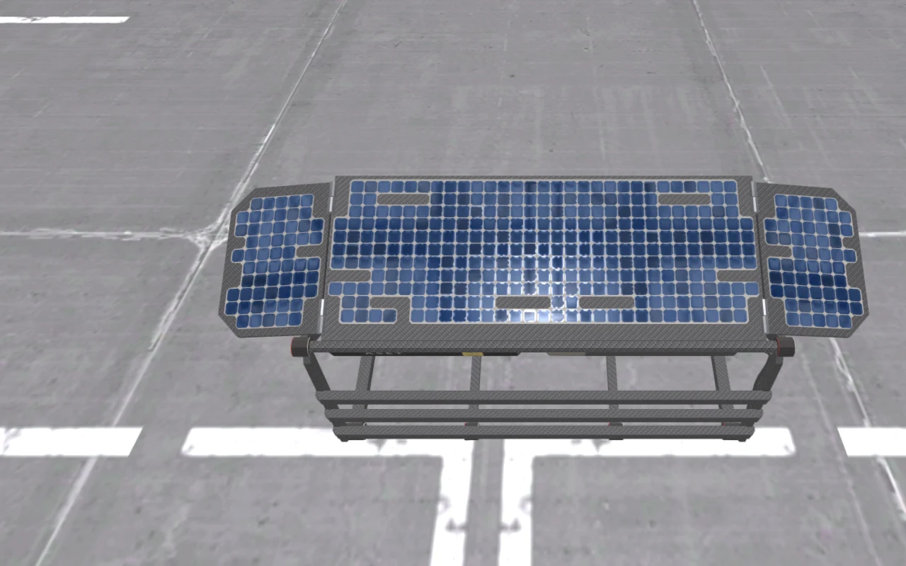
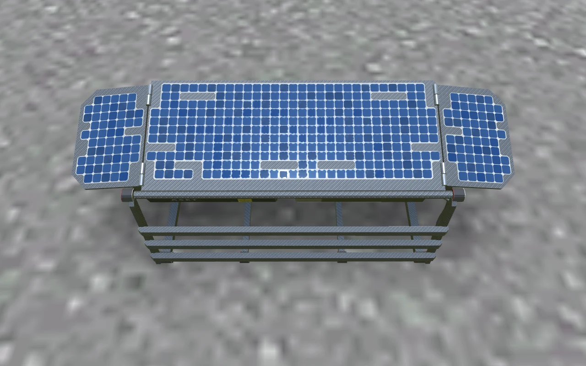

ShineFix home
← Back to supported mods
ASET PRC (Portable Rover Components)
Optics verified
Human tested
Version 0.1.0.6
Compatibility evidence
Original screenshot gallery
Approved retake evidence
Parts
ASET PRC Bumper

